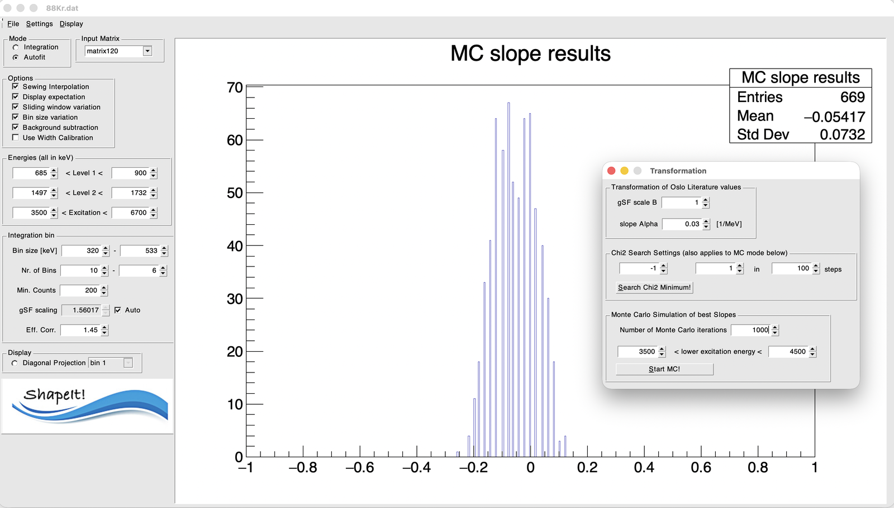

6. Monte Carlo uncertainty and absolute level density¶
Once you have a sewn γSF you're happy with, the final step is to compare it with an Oslo-method result for the same data set, determine the slope correction \(\alpha\), and — if you also load an Oslo-method level density — turn that into an absolute partial level density.
Load the comparison (Oslo-method) data¶
Under Settings → Load Literature Values gSF..., load the Oslo-method γSF for the same nucleus/data set. Enable Display expectation (see Options and sewing) to overlay it with your sewn result.
Open the Transformation dialog¶
Settings → Transformation... opens a dialog with three sections.
Transformation of Oslo literature values¶
- gSF scale B and slope Alpha — the two parameters of the Oslo transformation (see The algorithm). Changing either updates the overlaid literature curve live, so you can see the effect interactively.
χ² search settings¶
- Alpha range (
< Alpha <) and steps — the range and resolution of the trial slope values scanned. - Search Chi2 Minimum! — runs a single, deterministic χ² scan over that range for your current configuration (current bins, current fit settings, current comparison data) and reports the best-fit \(\alpha\).
Note
This single-configuration search is a fast sanity check, but it only reflects the uncertainty of one particular choice of bins and fit settings. For a proper uncertainty estimate, use the Monte Carlo section below.
Monte Carlo simulation of best slopes¶
- Number of Monte Carlo iterations — typically a few hundred to a thousand.
- Lower excitation energy / Higher excitation energy — the window from which the lower edge of the excitation-energy range is redrawn on each iteration (this plays the role of the sliding-window variation, but as a continuous random draw rather than a fixed grid of shifts).
- Start MC! — runs the randomized procedure. The button toggles to a stop control while running, so you can interrupt a long run early.
Why the lower edge matters
The extracted slope correction \(\delta\alpha\) depends on which γ-ray energies are included in the χ² comparison between the Shape-method γSF and the literature γSF. This sensitivity is not a numerical artefact — it reflects real physics. The Shape method relies on the nucleus behaving statistically, which breaks down at low excitation energy, where individual levels and non-statistical structure dominate and the ratio of Eq. for \(R\) (see The algorithm) no longer cleanly reflects the γSF. Including bins that are too low therefore biases the slope. Varying the lower edge of the excitation-energy range is what lets the Monte Carlo fold this sensitivity into \(\delta\alpha\) and its uncertainty, rather than committing to one (possibly too-low) starting energy. Choose the Lower / Higher excitation energy window so it stays within the range where the Shape method is valid for your nucleus.
On each iteration, ShapeIt redraws:
- the excitation-energy bin width (uniformly, over the same range as the deterministic bin-size scan),
- the lower edge of the excitation-energy range (uniformly, over the range set above),
- the peak areas of both diagonals in every accepted bin (from a Gaussian centred on the fitted value, width = its statistical uncertainty), and
- the comparison γSF data itself (from a Gaussian centred on each published point, width = its quoted uncertainty),
then repeats diagonal extraction, peak fitting, and symmetric sewing from scratch, and records the best-fit \(\alpha\) from a χ² comparison against the (resampled) comparison curve.
Watching the run¶
While the Monte Carlo runs, the main plot shows the current iteration's Shape-method γSF overlaid with that iteration's resampled literature γSF — so both curves change from iteration to iteration, the Shape data because it's re-extracted with freshly drawn bins and peak areas, and the literature curve because each of its points is redrawn within its uncertainty. To keep the randomization from being slowed down by constant redrawing, the display refreshes only every 10th iteration; the underlying calculation still runs every iteration.
Reading the result¶

Result of 1000 requested iterations for 88Kr.dat (the Transformation
dialog is open on top, showing the settings used for this run). The stat
box reports 669 Entries — fewer than the 1000 requested, most likely
because the run was stopped early via the Start/Stop toggle; if you let a
run finish, Entries should match your requested iteration count.
The accumulated best-fit \(\alpha\) values form a histogram that is close to Gaussian. Its mean is the slope correction \(\delta\alpha\) relative to the literature normalization, and its standard deviation is the corresponding 1σ uncertainty (see The algorithm) — in this example, \(\delta\alpha = -0.054 \pm 0.073\,\text{MeV}^{-1}\).
Getting to the absolute partial level density¶
\(\delta\alpha\) is exactly the parameter that the level density at the neutron separation energy would otherwise have had to supply. Apply it to your Oslo-method level density via the same transformation (with the low-energy normalization still anchored to known discrete levels, as usual) to obtain the absolute partial level density — now fixed without reference to a level-density model. Use Display → Draw level density and Display → Print Table of rho results to inspect and export it, and Settings → Load Literature Values rho... to overlay a comparison, e.g. a TALYS-based level-density model.